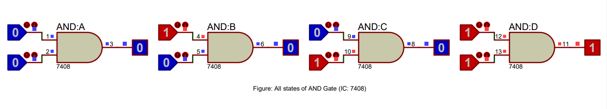
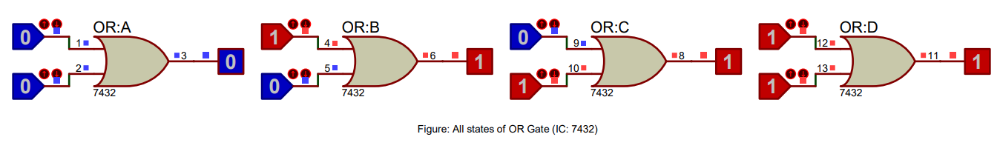
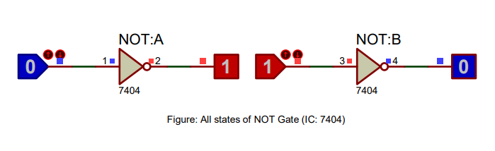
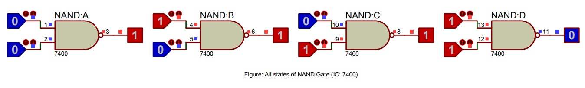
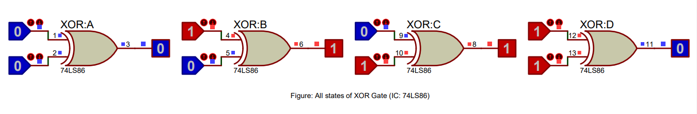
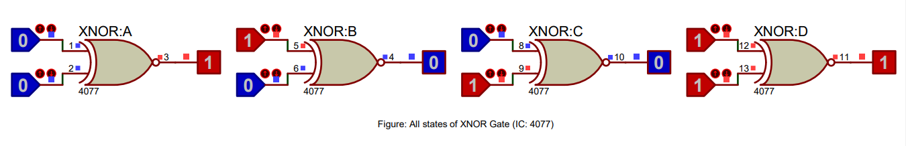

Introduction to Logic Gates
Logic gates are the building blocks of digital circuits. They are simple electronic devices that perform basic operations using binary inputs (0 or 1) and produce an output based on the input values. In this activity, we will explore the basic logic gates and their functions using Proteus software.
Types of Logic Gates
There are seven main types of logic gates:
- AND gate (IC 7408): Gives an output of 1 only when both inputs are 1.
- OR gate (IC 7432): Gives an output of 1 when at least one input is 1.
- NOT gate (IC 7404): Inverts the input, changing 1 to 0 and 0 to 1.
- NAND gate (IC 7400): A combination of AND and NOT gates, giving an output of 0 only when both inputs are 1.
- NOR gate (IC 7402): A combination of OR and NOT gates, giving an output of 1 only when both inputs are 0.
- XOR gate (IC 74LS86): Gives an output of 1 when the inputs are different, 0 when they are the same.
- XNOR gate (IC 4077): The opposite of XOR, gives an output of 1 when the inputs are the same, 0 when they are different.
Requirements
- Computer with Windows OS
- Proteus software
Proteus Setup
Follow these steps to explore logic gates using Proteus:
- Open Proteus software.
- Create a new project.
- Add the required IC for each logic gate to the design.
- Connect input and output pins to switches and LED indicators, respectively.
- Power the circuit and test the truth table by toggling the switches.
Procedures of Doing the Experiment
AND Gate
Title
Verification of all Logic Gate's Truth Table Using Proteus Software
Aim
To validate the truth table of an AND logic gate through Proteus software simulation.
Requirements
Proteus software, 7408 AND gate IC, Logic State, and Logic Probe tools.
Theory
An AND gate performs a logical conjunction between input signals. The output is true (1) only when all inputs are true (1). The truth table of an AND gate lists input-output combinations, providing a basis for verifying the gate's functionality in a simulation.
Truth Table of AND Gate (7408)
| Input: A | Input: B | Output |
|---|---|---|
| 0 | 0 | 0 |
| 0 | 1 | 0 |
| 1 | 0 | 0 |
| 1 | 1 | 1 |
Procedure
- Open Proteus, create a new project and open schematic capture.
- Add the 7408 AND gate IC, Logic State, and Logic Probe (Big) from the pick device menu to the dashboard.
- Place the AND gate, Logic State, and Logic Probe tools onto the schematic.
- Connect the components, run the simulation, and observe the output for input combinations "00", "01", "10", "11".
- Verify the simulation results against the expected truth table of an AND gate.
Result
The simulation results match the AND gate truth table, validating its correct functionality.
Conclusion
The AND gate truth table has been successfully verified using Proteus software, confirming its proper operation in digital circuits.
OR Gate
Title
Verification of all Logic Gate's Truth Table Using Proteus Software
Aim
To validate the truth table of an OR logic gate through Proteus software simulation.
Requirements
Proteus software, 7432 OR gate IC, Logic State, and Logic Probe tools.
Theory
An OR gate performs a logical disjunction between input signals. The output is true (1) if any of the inputs are true (1). The truth table of an OR gate lists input-output combinations, providing a basis for verifying the gate's functionality in a simulation.
Truth Table of OR Gate (7432)
| Input: A | Input: B | Output |
|---|---|---|
| 0 | 0 | 0 |
| 0 | 1 | 1 |
| 1 | 0 | 1 |
| 1 | 1 | 1 |
Procedure
- Open Proteus, create a new project and open schematic capture.
- Add the 7432 OR gate IC, Logic State, and Logic Probe (Big) from the pick device menu to the dashboard.
- Place the OR gate, Logic State, and Logic Probe tools onto the schematic.
- Connect the components, run the simulation, and observe the output for input combinations "00", "01", "10", "11".
- Verify the simulation results against the expected truth table of an OR gate.
Result
The simulation results match the OR gate truth table, validating its correct functionality.
Conclusion
The OR gate truth table has been successfully verified using Proteus software, confirming its proper operation in digital circuits.
NOT Gate
Title
Verification of all Logic Gate's Truth Table Using Proteus Software
Aim
To validate the truth table of a NOT logic gate through Proteus software simulation.
Requirements
Proteus software, 7404 NOT gate IC, Logic State, and Logic Probe tools.
Theory
A NOT gate, also known as an inverter, performs a logical negation of the input signal. The output is true (1) when the input is false (0) and vice versa. The truth table of a NOT gate lists input-output combinations, providing a basis for verifying the gate's functionality in a simulation.
Truth Table of NOT Gate (7404)
| Input | Output |
|---|---|
| 0 | 1 |
| 1 | 0 |
Procedure
- Open Proteus, create a new project and open schematic capture.
- Add the 7404 NOT gate IC, Logic State, and Logic Probe (Big) from the pick device menu to the dashboard.
- Place the NOT gate, Logic State, and Logic Probe tools onto the schematic.
- Connect the components, run the simulation, and observe the output for input values "0" and "1".
- Verify the simulation results against the expected truth table of a NOT gate.
Result
The simulation results match the NOT gate truth table, validating its correct functionality.
Conclusion
The NOT gate truth table has been successfully verified using Proteus software, confirming its proper operation in digital circuits.
NAND Gate
Title
Verification of all Logic Gate's Truth Table Using Proteus Software
Aim
To validate the truth table of a NAND logic gate through Proteus software simulation.
Requirements
Proteus software, 7400 NAND gate IC, Logic State, and Logic Probe tools.
Theory
A NAND gate is a combination of an AND gate followed by a NOT gate. The output is false (0) only when all inputs are true (1). The truth table of a NAND gate lists input-output combinations, providing a basis for verifying the gate's functionality in a simulation.
Truth Table of NAND Gate (7400)
| Input: A | Input: B | Output |
|---|---|---|
| 0 | 0 | 1 |
| 0 | 1 | 1 |
| 1 | 0 | 1 |
| 1 | 1 | 0 |
Procedure
- Open Proteus, create a new project and open schematic capture.
- Add the 7400 NAND gate IC, Logic State, and Logic Probe (Big) from the pick device menu to the dashboard.
- Place the NAND gate, Logic State, and Logic Probe tools onto the schematic.
- Connect the components, run the simulation, and observe the output for input combinations "00", "01", "10", "11".
- Verify the simulation results against the expected truth table of a NAND gate.
Result
The simulation results match the NAND gate truth table, validating its correct functionality.
Conclusion
The NAND gate truth table has been successfully verified using Proteus software, confirming its proper operation in digital circuits.
NOR Gate
Title
Verification of all Logic Gate's Truth Table Using Proteus Software
Aim
To validate the truth table of a NOR logic gate through Proteus software simulation.
Requirements
Proteus software, 7402 NOR gate IC, Logic State, and Logic Probe tools.
Theory
A NOR gate is a combination of an OR gate followed by a NOT gate. The output is true (1) only when all inputs are false (0). The truth table of a NOR gate lists input-output combinations, providing a basis for verifying the gate's functionality in a simulation.
Truth Table of NOR Gate (7402)
| Input: A | Input: B | Output |
|---|---|---|
| 0 | 0 | 1 |
| 0 | 1 | 0 |
| 1 | 0 | 0 |
| 1 | 1 | 0 |
Procedure
- Open Proteus, create a new project and open schematic capture.
- Add the 7402 NOR gate IC, Logic State, and Logic Probe (Big) from the pick device menu to the dashboard.
- Place the NOR gate, Logic State, and Logic Probe tools onto the schematic.
- Connect the components, run the simulation, and observe the output for input combinations "00", "01", "10", "11".
- Verify the simulation results against the expected truth table of a NOR gate.
Result

The simulation results match the NOR gate truth table, validating its correct functionality.
Conclusion
The NOR gate truth table has been successfully verified using Proteus software, confirming its proper operation in digital circuits.
XOR Gate
Title
Verification of all Logic Gate's Truth Table Using Proteus Software
Aim
To validate the truth table of an XOR logic gate through Proteus software simulation.
Requirements
Proteus software, 74LS86 XOR gate IC, Logic State, and Logic Probe tools.
Theory
An XOR gate, also known as an Exclusive OR gate, performs a logical exclusive disjunction between input signals. The output is true (1) only when the number of true inputs is odd. The truth table of an XOR gate lists input-output combinations, providing a basis for verifying the gate's functionality in a simulation.
Truth Table of XOR Gate (74LS86)
| Input: A | Input: B | Output |
|---|---|---|
| 0 | 0 | 0 |
| 0 | 1 | 1 |
| 1 | 0 | 1 |
| 1 | 1 | 0 |
Procedure
- Open Proteus, create a new project and open schematic capture.
- Add the 74LS86 XOR gate IC, Logic State, and Logic Probe (Big) from the pick device menu to the dashboard.
- Place the XOR gate, Logic State, and Logic Probe tools onto the schematic.
- Connect the components, run the simulation, and observe the output for input combinations "00", "01", "10", "11".
- Verify the simulation results against the expected truth table of an XOR gate.
Result
The simulation results match the XOR gate truth table, validating its correct functionality.
Conclusion
The XOR gate truth table has been successfully verified using Proteus software, confirming its proper operation in digital circuits.
XNOR Gate
Title
Verification of all Logic Gate's Truth Table Using Proteus Software
Aim
To validate the truth table of an XNOR logic gate through Proteus software simulation.
Requirements
Proteus software, 4077 XNOR gate IC, Logic State, and Logic Probe tools.
Theory
An XNOR gate, also known as an Exclusive NOR gate, performs a logical equivalence between input signals. The output is true (1) when the number of true inputs is even. The truth table of an XNOR gate lists input-output combinations, providing a basis for verifying the gate's functionality in a simulation.
Truth Table of XNOR Gate (4077)
| Input: A | Input: B | Output |
|---|---|---|
| 0 | 0 | 1 |
| 0 | 1 | 0 |
| 1 | 0 | 0 |
| 1 | 1 | 1 |
Procedure
- Open Proteus, create a new project and open schematic capture.
- Add the 4077 XNOR gate IC, Logic State, and Logic Probe (Big) from the pick device menu to the dashboard.
- Place the XNOR gate, Logic State, and Logic Probe tools onto the schematic.
- Connect the components, run the simulation, and observe the output for input combinations "00", "01", "10", "11".
- Verify the simulation results against the expected truth table of an XNOR gate.
Result
The simulation results match the XNOR gate truth table, validating its correct functionality.
Conclusion
The XNOR gate truth table has been successfully verified using Proteus software, confirming its proper operation in digital circuits.
Summary
In this series of experiments, we have successfully verified the truth tables of AND, OR, NOT, NAND, NOR, XOR, and XNOR logic gates using Proteus software. The observed results match the expected truth tables, which validates the functionality of these gates in Proteus software. This provides students with an effective way to learn and understand the behavior of various logic gates and to develop their skills in digital circuit design and simulation.